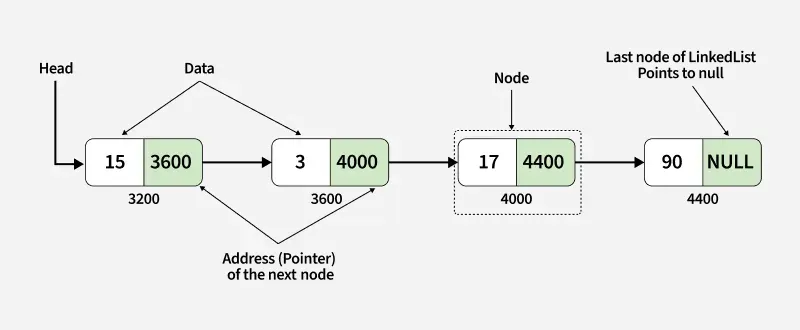
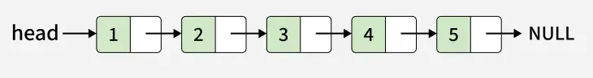
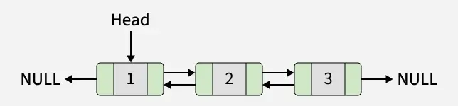
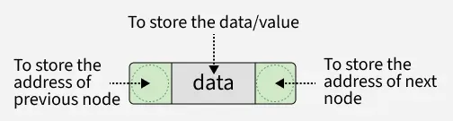
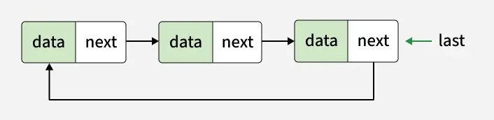
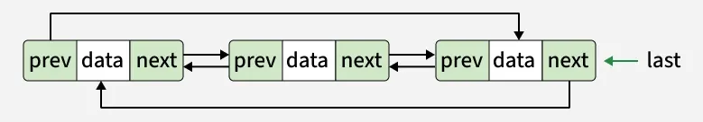
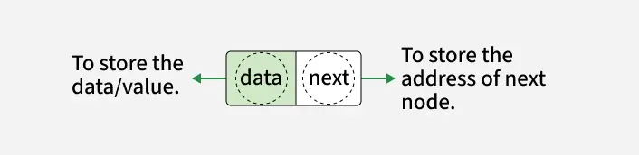

Linked List
Linked list adalah struktur data fundamental dalam ilmu komputer. Fungsi utamanya adalah memungkinkan operasi penyisipan dan penghapusan yang lebih efisien dibandingkan dengan array . Seperti array, linked list juga digunakan untuk mengimplementasikan struktur data lain seperti stack, queue, dan deque. Linked list adalah jenis struktur data linear di mana setiap item tidak selalu berada di lokasi yang berdekatan. Setiap item disebut node dan dihubungkan satu sama lain menggunakan link.

- Sebuah node berisi dua hal, pertama adalah data dan kedua adalah tautan yang menghubungkannya dengan node lain.
- Node pertama disebut node kepala dan kita dapat menelusuri seluruh daftar menggunakan tautan kepala dan berikutnya ini.
Berikut perbandingan antara Linked List dan Array.
Linked List:
- Struktur Data: Tidak Berurutan
- Alokasi Memori: Biasanya dialokasikan satu per satu ke masing-masing elemen.
- Penyisipan/Penghapusan: Efisien
- Akses: Berurutan
Array:
- Struktur Data: Berurutan
- Alokasi Memori: Biasanya dialokasikan ke seluruh array.
- Penyisipan/Penghapusan: Tidak Efisien
- Akses: Acak
Contoh Code
q = []
q.append('a')
q.append('b')
q.append('c')
print("Initial queue:", q)
print("Elements dequeued from queue:")
print(q.pop(0))
print(q.pop(0))
print(q.pop(0))
print("Queue after removing elements:", q)
Basics
Singly Linked List Tutorial
A singly linked list is a fundamental data structure, it consists of nodes where each node contains a data field and a reference to the next node in the linked list. The next of the last node is null, indicating the end of the list. Linked Lists support efficient insertion and deletion operations.

Understanding Node Structure
In a singly linked list, each node consists of two parts: data and a pointer to the next node. This structure allows nodes to be dynamically linked together, forming a chain-like sequence.
Contoh Code
# Definition of a Node in a singly linked list
class Node:
def __init__(self, data):
# Data part of the node
self.data = data
self.next = None
Doubly Linked List Tutorial
A doubly linked list is a more complex data structure than a singly linked list, but it offers several advantages. The main advantage of a doubly linked list is that it allows for efficient traversal of the list in both directions. This is because each node in the list contains a pointer to the previous node and a pointer to the next node. This allows for quick and easy insertion and deletion of nodes from the list, as well as efficient traversal of the list in both directions.

Representation of Doubly Linked List in Data Structure
In a data structure, a doubly linked list is represented using nodes that have three fields:
- Data
- A pointer to the next node (next)
- A pointer to the previous node (prev)

Contoh Code
class Node:
def __init__(self, data):
# To store the value or data.
self.data = data
# Reference to the previous node
self.prev = None
# Reference to the next node
self.next = None
Introduction to Circular Linked List
A circular linked list is a data structure where the last node points back to the first node, forming a closed loop.
- Structure: All nodes are connected in a circle, enabling continuous traversal without encountering NULL.
- Difference from Regular Linked List: In a regular linked list, the last node points to NULL, whereas in a circular linked list, it points to the first node.
- Uses: Ideal for tasks like scheduling and managing playlists, where smooth and repeated.
Types of Circular Linked Lists
1. Circular Singly Linked List
In Circular Singly Linked List, each node has just one pointer called the "next" pointer. The next pointer of the last node points back to the first node and this results in forming a circle. In this type of Linked list, we can only move through the list in one direction.

2. Circular Doubly Linked List:
In circular doubly linked list, each node has two pointers prev and next, similar to doubly linked list. The prev pointer points to the previous node and the next points to the next node. Here, in addition to the last node storing the address of the first node, the first node will also store the address of the last node.

Note: Here, we will use the singly linked list to explain the working of circular linked lists.
Representation of a Circular Singly Linked List
Let's take a look on the structure of a circular linked list.

class Node:
def __init__(self, data):
self.data = data
self.next = None
In the code above, each node has data and a pointer to the next node. When we create multiple nodes for a circular linked list, we only need to connect the last node back to the first one.